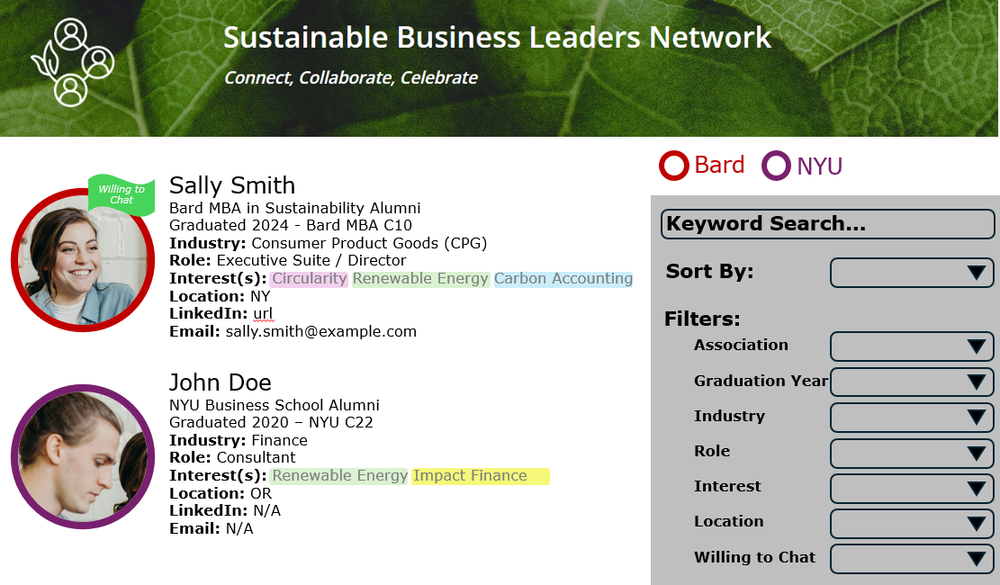

By attending the retreat you will have access to fellow attendees information such as interest, industry, role, and location to foster connections beyond the annual retreat. This information will be able to be filtered, we encourage you to use it to continue conversations, brainstorming, and leading the change foward!
As an attendee, you will have access to this network for 2 years past the attended retreat date. If you continue to attend the annual retreat, that 2 year timeline will reset.
This information is managed by our organization volunteers. We will NOT share this information beyond the attendee network list. If at any point you wish to remove your information, please contact us using the contact tab.
Example image:
